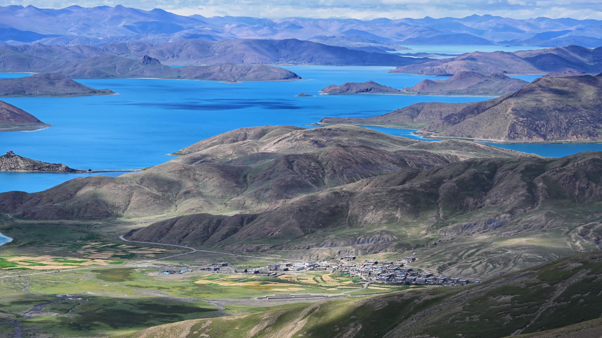
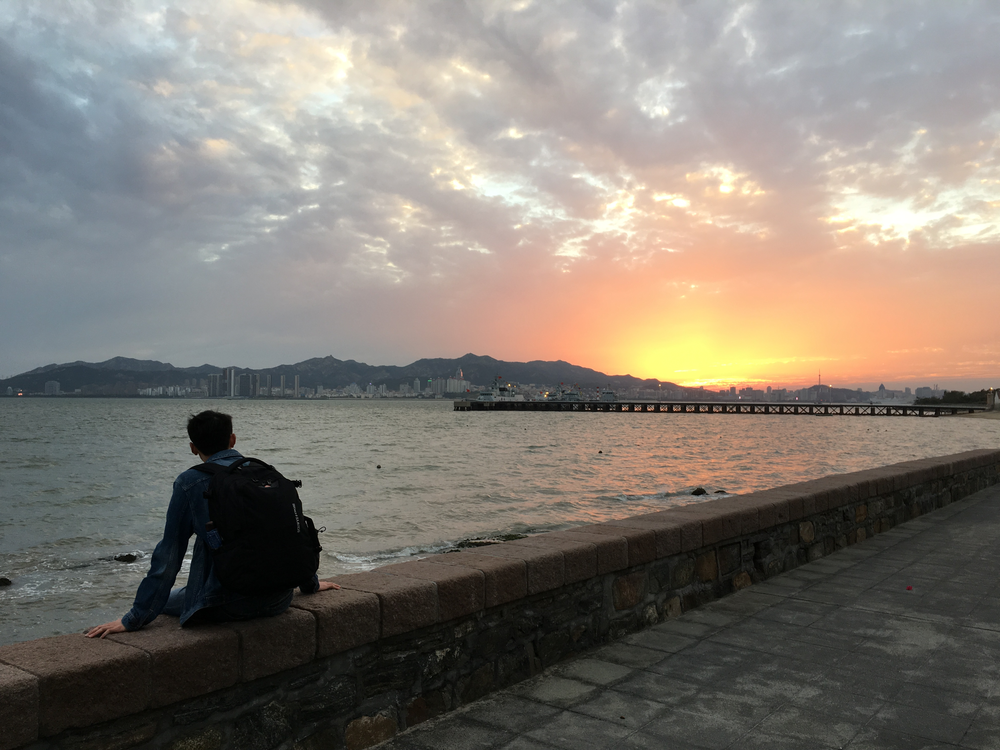
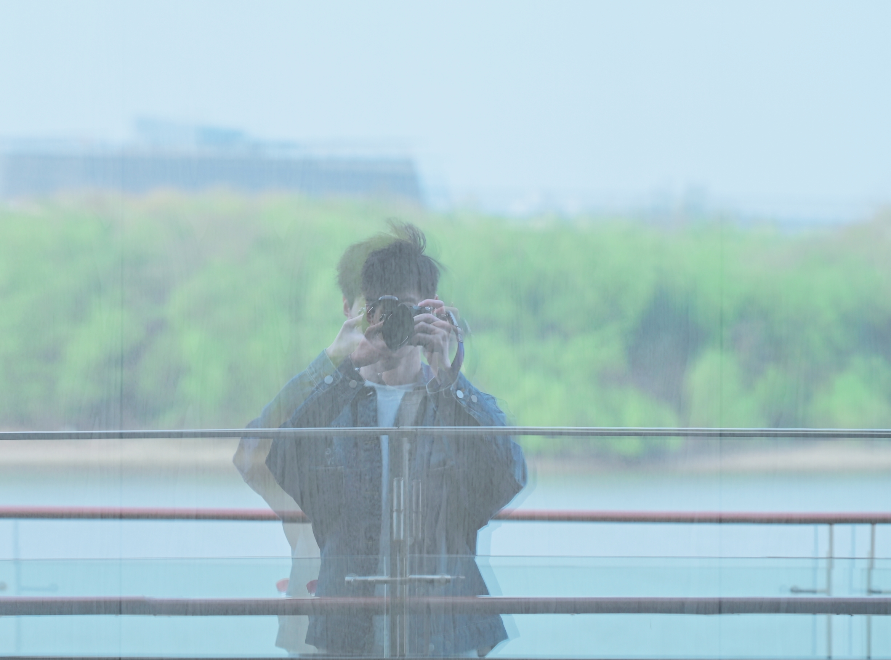

A VISUAL JOURNAL / 2026
把辽阔，留在日常。
高原的辽阔、草原的生命，
还有海岛与火山之间的风。

TRAVEL PHOTOGRAPHS / 旅行摄影
走进不同的旷野
西藏 · 非洲 · 印度尼西亚 · 沿途的光与记忆
COLLECTION 01 / TIBET
高原的蓝，雪山的白
阿里大环线的湖泊、雪山与土林，构成这段高原旅程的辽阔。
旅程地图
阿里大环线
沿着高原湖泊、雪山与土林，记录一路所见。
地点索引
阿里大环线 · 13 天行程（9/24—10/6）
D1 · 9/24拉萨—康马：喀庆拉、鲁日拉观景台，羊卓雍措西岸、普莫雍错（推瓦村）。
D2 · 9/25康马—岗巴：冲巴雍错、多庆错、真桑寺、卓木拉日观景台、吉汝村、康布温泉。
D3 · 9/26岗巴—定结—西林—扎西宗：奇林峡、定结宗措、十万沙丘、西林观景台、加乌拉山口。
D4 · 9/27扎西宗—佩枯错—拉普村—吉隆县：珠穆朗玛关帝庙、珠峰古堡、希夏邦马峰观景台；不前往吉隆镇。
D5 · 9/28吉隆—萨嘎—仲巴：昌果乡、杰多拉垭口、里孜口岸。
D6 · 9/29仲巴—帕羊—霍尔—普兰：马泉河湿地公园、公珠措。
D7 · 9/30普兰—巴嘎—札达：拉昂错、两山两湖观景台、冈仁波齐观景台、楚果寺、吉吾寺、穹窿银城、玛朗峡谷。
D8 · 10/1札达—狮泉河：古格王朝遗址、皮央东嘎石窟、霞义沟土林、阿里暗夜公园。
D9 · 10/2狮泉河—日土—多玛：日土岩画、日土宗遗址、班公湖。
D10 · 10/3多玛—改则：龙木措、月牙湖、美马错、羌塘无人区、进藏先遣连纪念馆；经松西达坂、红山达坂。
D11 · 10/4改则—尼玛：当穹错、文部南村、当惹雍措、大地之树（洞错南岸）。
D12 · 10/5尼玛—申扎—班戈。
D13 · 10/6班戈—拉萨：达则措、恰规错、色林措、甲岗日雪山、申扎湿地、天眼温泉、三生石服务点、巴木措、纳木错北岸、圣象天门。
COLLECTION 02 / AFRICA
旷野之上，生命经过
从桑给巴尔岛的印度洋海岸，到塞伦盖蒂大草原，记录海与旷野的不同节奏。
COLLECTION 03 / INDONESIA
岛屿、火山与海风
在布罗莫的日出、巴厘岛与佩妮达岛的海色之间，留下旅途片段。新加坡中转的红眼航班之后，是 Sewu 瀑布与 Bromo 火山的超级特种兵之旅：眼睛一睁是坐车，眼睛一睁是爬山；至于眼睛闭上睡觉？没有～
COLLECTION 04 / SHANGHAI
在熟悉的城市，继续看见
从宝山滨江的晚霞，到徐汇滨江的线条与倒影，再到纪念馆旁的灯光和花枝。远行之外，也把身边的光留在这里。
COLLECTION 05 / MOMENTS ALONG THE WAY
山海之间，慢慢停留
老树与村落，海边的晚霞，秋林里的光，水岸的鹿与飞鸟，还有洱海边相伴的日常。走过不同的地方，也记下愿意停留的瞬间。
NOTES ON THE ROAD
风景之外，还有停留

TRAVEL NOTE / 威海 · 海边的停留 · 2016年10月1日
辽阔，让人愿意慢下来
有时站在高原湖边，远山和天空会把人的视线带得很远；有时在非洲草原，一只动物经过，整片旷野就忽然有了节奏；到了印度尼西亚，海浪与火山又留下另一种热烈。摄影让我把这些瞬间留下，也让我重新记住当时看见的世界。
我会继续把沿途的光、颜色和记忆，慢慢写进这里。

BEHIND THE LENS
看见，然后记住。
这里记录我在世界各地的足迹：山川与高原的辽阔，火山与海浪的热烈，还有猛兽与温顺生灵各自的日常。
也记录我摄影的变化：从一张照片到一组影像，再到围绕一个主题讲述；从捕捉特写，到寻找对比与尺度，慢慢看见主体和环境之间的关系。一次次按下快门，也一次次学习观察与取舍。
用镜头留下这个世界真实又美好的一面，也留下自己不断变化的目光。
徐汇滨江公园 · 看见自己的目光